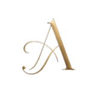

Obsidian Charcoal
#171412
Used for headings, navigation, footer backgrounds, and premium contrast areas.

Áurea Joyería
This name was selected because it is the actual jewelry store brand for the project. Áurea feels elegant and premium, while Joyería clearly communicates that the business sells jewelry. The name also works well for a bilingual audience because it is short, memorable, and closely tied to the store's Instagram identity.
Reference social account: @aurea_joyeria_oficial
Possible domain: aureajoy.com
The site will help customers learn about Áurea Joyería, browse collections and available products, view basic product details, and contact the seller with questions or purchase interest. The website should make the brand look professional and make it easier for people to find jewelry that fits their personal style, gift needs, or special occasion.
#171412
Used for headings, navigation, footer backgrounds, and premium contrast areas.
#c7a45d
Used for accents, buttons, borders, highlights, and jewelry-inspired details.
#f8f6f2
Used for the page background and clean content areas.
#a98f86
Used for secondary accents, form focus states, catalog tags, and soft dividers.
This font will be used for the logo-style text, site name, page headings, collection names, and featured product titles. It matches the high-contrast premium serif style used in the ÁUREA wordmark.
This font will be used for body copy, navigation links, buttons, product details, forms, and footer text. It keeps the interface clean, modern, and easy to read.
The home page will introduce Áurea Joyería, show featured collections and products, and guide visitors to the product catalog and contact page.
The mobile layout will stack the page from top to bottom: logo and menu, hero section, featured products, contact section, and footer.
The desktop layout will use a wider header with navigation, a large hero section, a product area with multiple items in a row, a contact section, and a footer.
The completed page and final project pages will be checked with the course testing tools before submission.